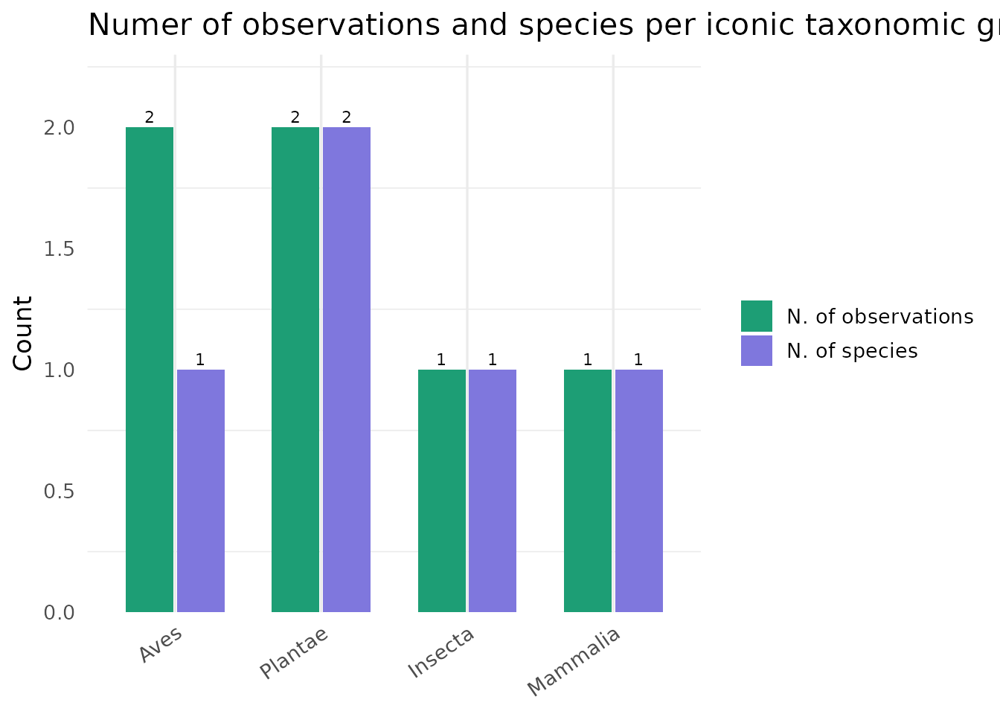
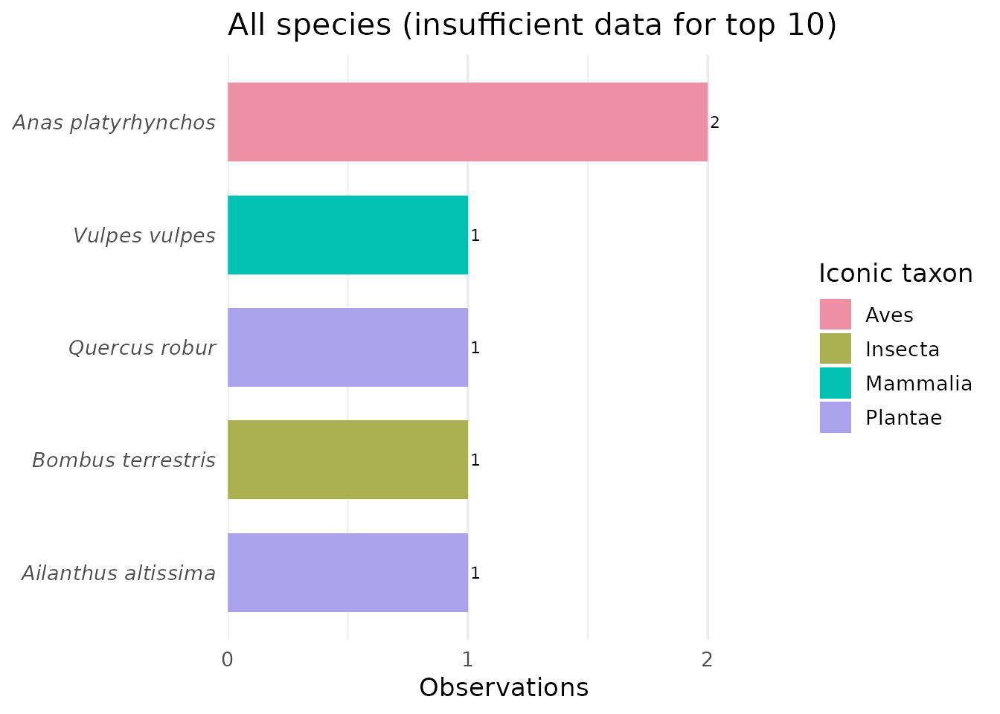
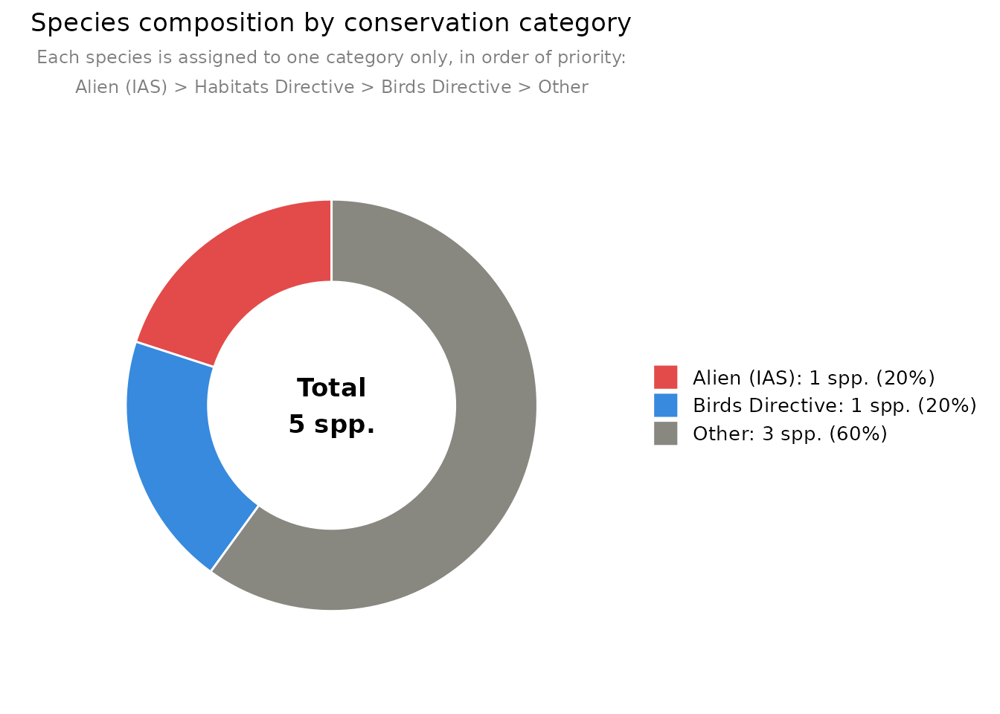

Visualization functions
Source:vignettes/articles/ReLTER_inatEnrich_charts.Rmd
ReLTER_inatEnrich_charts.RmdOverview
This article illustrates the visualization functions available in
ReLTER.inatEnrich using a small example dataset.
Taxonomic composition
iconic_taxa() shows the number of observations and
species per iNaturalist iconic taxon group.
iconic_taxa(df)
Top observed species
top_n_species() displays the most observed species
coloured by iconic taxon group.
top_n_species(df, n = 10)
Conservation category
obs_pie_chart() summarises species by conservation
category following a fixed priority order: Alien (IAS) > Habitats
Directive > Birds Directive > Other.
obs_pie_chart(df)